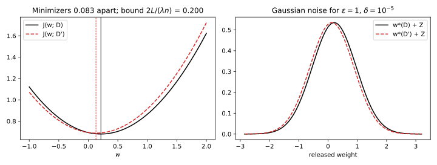
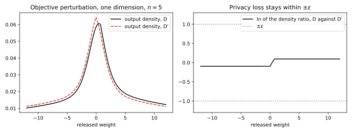
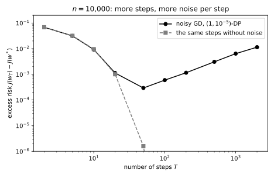
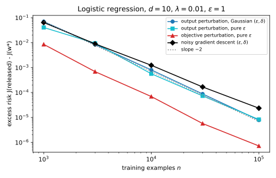

36 Private empirical risk minimization
36.1 Why this matters
Most of machine learning is empirical risk minimization (ERM): choose the weights \(w\) that minimize the average loss on the training data, usually plus a ridge penalty \(\frac\lambda2\|w\|^2\). The trained weights are a function of every record, and Membership inference showed that they give some of those records away. Differential privacy (DP) promises that the distribution of whatever you release changes by at most a factor \(e^\varepsilon\), plus a slack \(\delta\), when one record changes. To keep that promise for a trained model, randomness has to enter somewhere between the data and the released weights, and there are three natural places: on the final weights (output perturbation), inside the objective (objective perturbation), or on every gradient during training (gradient perturbation).
The one idea that organizes all three is that privacy needs a bound on how far one record can move what you release. That bound is the sensitivity, and the noise is sized to hide a move of that length. The three methods differ only in which quantity they bound, and each step back toward the data needs fewer assumptions. Output perturbation needs an exact, unique minimizer of a strongly convex objective. Objective perturbation needs that and a loss with bounded curvature. Gradient perturbation, for its privacy, needs only that each record’s gradient is bounded, with no convexity and no exact solution, which is why it is the one that survives in deep learning, as stochastic gradient descent (SGD) with per-example clipping and Gaussian noise, DP-SGD.
Throughout, neighbouring datasets differ by replacing one record, so both have \(n\) records; \(L\) bounds the length of every record’s loss gradient. The running example is ridge-regularized logistic regression in \(d = 10\) dimensions with \(\lambda = 0.01\), features on the unit sphere (so \(L = 1\)), and a target of \(\varepsilon = 1\), with \(\delta = 10^{-5}\) for the methods that need one. Quality is measured by the excess risk, how much worse the private weights fit the training objective than the exact minimizer.
36.2 Output perturbation
The simplest private trainer treats training as a black box: compute the exact minimizer \(w^*\), then add noise. For that you need the minimizer’s sensitivity. Replacing one record changes the average loss by one term in and one out, so the objective’s gradient changes by at most \(2L/n\) anywhere. The ridge makes the objective \(\lambda\)-strongly convex: its gradient grows by at least \(\lambda\) per unit of distance, so a point where the gradient is \(g\) long lies within \(g/\lambda\) of the minimizer. At the new minimizer, the old objective’s gradient is at most \(2L/n\), hence the minimizer moves by at most \[\|w^*(D) - w^*(D')\| \le \frac{2L}{\lambda n}. \tag{36.1}\] Add Gaussian noise to that, and you have the Gaussian mechanism (The Laplace and Gaussian mechanisms). Its privacy depends only on the ratio \(\mu\) of the sensitivity to the noise standard deviation, and the exact calibration (Balle & Wang 2018) gives the largest admissible ratio \(\mu(\varepsilon, \delta)\). At \(\varepsilon = 1\) and \(\delta = 10^{-5}\), \(\mu = 0.2681\), so the noise must be \(\sigma = 3.7306\) times the sensitivity. The classic formula \(\sqrt{2\ln(1.25/\delta)}/\varepsilon\) asks for 4.8448 times, 30% more noise for the same guarantee, so always calibrate exactly.
The noise must hide the worst case, not the actual move. In one dimension with \(n = 20\) records and \(\lambda = 0.5\), replacing one record moves the minimizer by 0.0832, but the bound is \(2/(0.5 \times 20) = 0.2\), and the noise is sized for 0.2 (Figure 36.1).

What does the noise cost? Near the minimizer the objective is a bowl whose curvature is the Hessian \(H\), so a random displacement \(Z\) raises it by about \(\frac12 Z^\top HZ\), and for Gaussian noise that averages to \[\mathbb E\big[J(\tilde w) - J(w^*)\big] \approx \frac{\sigma^2}{2}\operatorname{tr}H. \tag{36.2}\] Notice the mismatch: the noise is calibrated to the curvature the ridge guarantees, \(\lambda\), but the damage is weighed by the actual curvature \(H\), data included. A small ridge buys a better non-private fit and costs a lot of noise, since \(\sigma \propto 1/\lambda\). In the running example at \(n = 10{,}000\), the sensitivity is \(2/(0.01 \times 10{,}000) = 0.02\), so \(\sigma = 0.07461\) per coordinate, next to a minimizer of length 2.886. The Hessian has trace 0.3129, and Equation 36.2 predicts an excess risk of \(8.711 \times 10^{-4}\); 20 simulated releases average \(9.274 \times 10^{-4}\). Because the noise falls like \(1/n\), the excess risk falls like \(1/n^2\), faster than the \(1/n\) statistical error of the non-private model, so in this convex, low-dimensional setting privacy eventually costs less than sampling does.
The weak point is that the sensitivity bound holds for the exact minimizer. If the optimizer stops at a point whose gradient has length \(g\), each output may sit \(g/\lambda\) from its exact minimizer, and the sensitivity becomes \(2L/(\lambda n) + 2g/\lambda\). In the running example a tolerance of \(g = 10^{-3}\), which looks tight, gives a sensitivity of 0.22 instead of 0.02: eleven times the noise and roughly 121 times the excess risk. To keep the extra term small you need \(g\) well below \(L/n\), which shrinks with the dataset. And the stopping rule must be a gradient check, not a step count: the privacy proof needs the bound on every pair of datasets, and “50 Newton steps” only guarantees it on datasets where 50 steps happen to be enough.
36.3 Objective perturbation
Output perturbation wastes the data’s curvature: it pays for the worst case \(\lambda\) and is judged on the actual \(H\). Chaudhuri, Monteleoni & Sarwate (2011) put the noise inside the optimization instead. They add a random linear term \(\frac1n\langle b, w\rangle\) to the objective and minimize exactly. A linear term acts like a constant force pushing the minimizer, and all of the objective’s curvature resists it, so where the data add curvature the minimizer moves less.
The privacy argument is subtler, because the output is no longer “something fixed plus noise”, and its result says where the budget goes. Each noise vector \(b\) produces exactly one output, so the output’s density is the noise density at the matching \(b\) times a stretching factor from the change of variables. Both factors differ between neighbours, and each consumes part of \(\varepsilon\). The stretching factor is governed by how much one record can change the objective’s curvature, which needs a loss of the form \(g(y\langle w, x\rangle)\) with \(|g'| \le 1\), curvature \(0 \le g'' \le c\) and \(\|x\| \le 1\); logistic regression qualifies with \(c = \frac14\). What is left for the noise is \[\varepsilon' = \varepsilon - 2\ln\Big(1 + \frac{c}{n\lambda}\Big), \tag{36.3}\] and \(b\) is drawn with density proportional to \(e^{-\varepsilon'\|b\|/2}\). The result is pure \(\varepsilon\)-DP. The stretching share shrinks as \(n\lambda\) grows: at \(n = 10{,}000\) in the running example it is 0.0050, so \(\varepsilon' = 0.9950\), while at \(n = 100\) the noise would get only \(\varepsilon' = 0.5537\). If \(\varepsilon'\) comes out non-positive, the method raises the ridge until the stretching takes only half the budget.
The benefit shows in the excess risk. To first order the minimizer moves by \(-H^{-1}b/n\), so the damage is weighed by \(H^{-1}\) rather than \(H\). If every eigenvalue of \(H\) is close to some \(h\), objective perturbation beats output perturbation by about \((h/\lambda)^2\). When the ridge supplies all the curvature the two are the same; when the data add curvature, objective perturbation wins quadratically. In the running example the curvature lies between 0.0263 and 0.0330, about three times the ridge, and the measured excess risk at \(n = 10{,}000\) is \(8.156 \times 10^{-5}\), against \(8.321 \times 10^{-4}\) for pure-DP output perturbation at the same \(\varepsilon\): ten times better, close to the \(3^2 = 9\) the rule of thumb predicts.
The analysis is safe, not tight. In one dimension the output densities can be computed exactly, and over 500 random datasets of 5 records with \(\lambda = 0.1\) and \(\varepsilon = 1\), the largest log ratio is 0.3779 (Figure 36.2). The noise part never exceeds 0.0992 of its budget of 0.1891, and the stretching part never exceeds 0.3395 of its budget of 0.8109, because the worst cases each factor assumes cannot happen together for logistic loss. The bound has to cover every dataset, so you cannot spend that slack, but for logistic loss the guarantee is conservative.

The price is in the requirements: exact minimization (the change of variables needs a unique minimizer), a twice-differentiable loss (a support vector machine’s hinge loss must be smoothed first) and a known curvature bound. Kifer, Smith & Thakurta (2012) extend it to Gaussian noise and constraints, and Iyengar et al. (2019) give a version that tolerates approximate solvers by adding a little output noise on top.
36.4 Gradient perturbation: noisy gradient descent
Real training is iterative and stops early. Gradient perturbation, analysed by Song, Chaudhuri & Sarwate (2013) and Bassily, Smith & Thakurta (2014), makes each step of the optimizer private and composes the steps. Its simplest form is full-batch gradient descent with Gaussian noise added to the mean gradient at each of \(T\) steps.
Each step is a Gaussian mechanism. Given the current weights, which are public at that moment because they were computed from earlier noisy outputs, replacing one record moves the mean gradient by at most \(2L/n\), whatever the weights are. Gaussian steps compose exactly: \(T\) steps, each with ratio \(\mu_{\text{step}}\), are as private as one Gaussian mechanism with ratio \(\sqrt T\,\mu_{\text{step}}\) (f-DP and Gaussian differential privacy). Setting that equal to \(\mu(\varepsilon, \delta)\) gives the noise on the mean gradient, \[\sigma = \frac{2L}{n}\cdot\frac{\sqrt T}{\mu(\varepsilon, \delta)}. \tag{36.4}\] Releasing every iterate is covered. Nothing in this argument used convexity, a minimizer or smoothness: only the gradient bound at the points the algorithm visits.
The consequence for practice is that the step count is a privacy parameter. Every step spends budget, so the per-step noise grows like \(\sqrt T\). For a strongly convex objective, the excess risk is an optimization error that shrinks geometrically with \(T\) plus a noise floor, roughly \(d\sigma^2/(4\beta)\) for a step size \(1/\beta\) set by the largest curvature \(\beta\), that grows in proportion to \(T\). Too few steps leave optimization error; too many drown the solution in noise (Figure 36.3).

You cannot pick \(T\) by trying several and keeping the best validation score for free: that choice is itself a computation on the data (Hyperparameter tuning). One honest option is a rule that uses only public quantities, the ridge, a curvature bound, the dimension, \(n\) and the budget, and minimizes the predicted excess risk. For \(n = 10{,}000\) it picks \(T = 218\), with per-step noise \(\sigma = 0.01102\) and a predicted excess risk of \(1.301 \times 10^{-3}\); simulated runs average \(1.384 \times 10^{-3}\). The rule is pessimistic, because it only knows that the curvature is at least \(\lambda\). With the data’s actual curvature the best \(T\) is near 50, with \(2.875 \times 10^{-4}\), five times less, but you may only use that knowledge if you obtained it privately or from similar public data.
36.5 Which to use
Each method is private by its own argument, so the choice is about accuracy. Theory says that for strongly convex problems the best achievable excess risk under \((\varepsilon, \delta)\)-DP falls like \[\frac{L^2\,d\,\ln(1/\delta)}{\lambda\,(n\varepsilon)^2}, \tag{36.5}\] up to logarithmic factors in \(n\) (Bassily, Smith & Thakurta 2014), and that a version of noisy gradient descent attains it; no method can do better, by the fingerprinting lower bounds of Lower bounds. Two practical readings follow. The cost grows with the dimension \(d\), so more parameters cost more privacy. And \(n\) and \(\varepsilon\) appear only as the product \(n\varepsilon\), because every sensitivity is proportional to \(1/n\) and every noise to sensitivity over \(\varepsilon\): to keep the same accuracy at half the budget, you need twice the data.
All methods share the rate; the constants differ, and the constant is what you choose by. Table 36.1 measures them on the running example.
| \(n\) | Output, Gaussian | Output, pure | Objective, pure | Noisy gradient descent (public \(T\)) |
|---|---|---|---|---|
| 1,000 | \(8.170 \times 10^{-2}\) | \(7.060 \times 10^{-2}\) | \(1.009 \times 10^{-2}\) | \(6.558 \times 10^{-2}\) |
| 10,000 | \(9.274 \times 10^{-4}\) | \(8.321 \times 10^{-4}\) | \(8.156 \times 10^{-5}\) | \(1.384 \times 10^{-3}\) |
| 100,000 | \(8.543 \times 10^{-6}\) | \(6.379 \times 10^{-6}\) | \(8.798 \times 10^{-7}\) | \(1.621 \times 10^{-5}\) |
| Slope in \(\log n\) | \(-2.01\) | \(-2.00\) | \(-2.01\) | \(-1.79\) |
The first three columns fall like \(1/n^2\); noisy gradient descent falls slightly slower, because its step count grows with \(\ln n\). Objective perturbation is about ten times better than output perturbation throughout (Figure 36.4), and noisy gradient descent with the public step rule is the worst for \(n \ge 10{,}000\); tuned privately to \(T \approx 50\) it would sit between the two perturbation methods.

The pure-DP column is slightly better than the Gaussian one here only because \(d = 10\) is small. The pure-DP noise has a length that grows faster with the dimension than the Gaussian’s: at \(d = 10\) their mean squared lengths are \(110\,\Delta^2\) against \(139.2\,\Delta^2\), but at \(d = 100\) they are \(10{,}100\,\Delta^2\) against \(1{,}392\,\Delta^2\). Pure DP costs a factor that grows like \(d\), the price of \(\delta = 0\), which Lower bounds shows is unavoidable; in high dimension a small \(\delta\) is much cheaper.
Excess risk is a fine measure, but you care about predictions, and those are forgiving. On held-out data the non-private model has accuracy 0.747 at \(n = 1{,}000\); output perturbation drops it to 0.681, noisy gradient descent to 0.695 and objective perturbation only to 0.736. By \(n = 10{,}000\) all four are within 0.002 of the non-private 0.753. A low-dimensional convex model on ten thousand records can be made private almost for free.
36.6 When the model is not convex
A neural network’s loss is not convex, and that breaks the first two methods outright. Without strong convexity the minimizer need not be unique or move continuously with the data. Take a one-dimensional loss with two wells near \(\pm1\), where the empirical minimizer sits in the well favoured by the majority label: with 501 labels of one kind and 500 of the other, changing one label flips the majority and moves the minimizer by 2.0010. No \(1/n\) appears, so output perturbation would need \(\sigma = 7.465\) at \(\varepsilon = 1\), more than three times the distance between the wells, whatever the dataset size. Objective perturbation fails at its first step, since the map from noise to output is no longer invertible.
Gradient perturbation keeps its guarantee, because its argument only used the gradient bound at the visited points. What it loses is the accuracy guarantee: whether it learns anything becomes an empirical question. For a neural network there is no bound \(L\) either, since gradients can be arbitrarily long, but you can force one by clipping: rescale each record’s gradient to length at most \(C\) before averaging, as Beyond global sensitivity clips a value before averaging it. The mean of clipped gradients moves by at most \(2C/n\), and the privacy argument goes through with \(L = C\). Clipping has a cost of its own: the mean of clipped gradients is no longer the gradient of the objective, so the algorithm optimizes something slightly different.
Full-batch steps are also too slow for large datasets. Using a random minibatch at each step makes steps cheap and, by amplification by subsampling, more private, since each record is used only with a small probability. Clipping, noise, minibatches and a subsampled-Gaussian accountant together are DP-SGD.
36.7 Code
The calibrations of this chapter take a few lines: find the largest admissible Gaussian ratio by bisection on the exact \(\delta\), then size the noise for each method.
from math import erfc, exp, log, sqrt
def phi(x: float) -> float:
"""Standard normal cumulative distribution function."""
return 0.5 * erfc(-x / sqrt(2))
def gaussian_delta(eps: float, mu: float) -> float:
"""Exact delta of a Gaussian mechanism with sensitivity-to-noise ratio mu."""
return phi(mu / 2 - eps / mu) - exp(eps) * phi(-mu / 2 - eps / mu)
def gaussian_mu(eps: float, delta: float) -> float:
"""Largest ratio mu for which the Gaussian mechanism is (eps, delta)-DP."""
lo, hi = 1e-6, 50.0
for _ in range(200):
mid = (lo + hi) / 2
lo, hi = (lo, mid) if gaussian_delta(eps, mid) > delta else (mid, hi)
return lo
mu = gaussian_mu(1.0, 1e-5)
print(f"{mu:.4f} {1 / mu:.4f}") # 0.2681 3.7306
print(f"{sqrt(2 * log(1.25 / 1e-5)):.4f}") # 4.8448
# Output perturbation: sensitivity 2L/(lambda n), L = 1, lambda = 0.01, n = 10,000.
print(f"{2 / (0.01 * 10_000) / mu:.5f}") # 0.07461
# Objective perturbation: the share of eps left for the noise, c = 1/4.
print(f"{1 - 2 * log(1 + 0.25 / (10_000 * 0.01)):.4f}") # 0.9950
# Noisy gradient descent: noise on the mean gradient for T = 218 steps.
print(f"{2 / 10_000 * sqrt(218) / mu:.5f}") # 0.01102The full edition’s script implements the three methods for logistic regression with exact Newton solves, computes the exact one-dimensional densities of objective perturbation, and runs the comparison:
uv run python code/part05-dp-ml/dp_erm.py36.8 Cheat sheet
| Method | Noise | Needs | Guarantee |
|---|---|---|---|
| Output perturbation | \(w^* + \mathcal N(0, \sigma^2I)\), \(\sigma = 2L/(\lambda n\mu)\) | Strong convexity; exact minimizer, or sensitivity \(2L/(\lambda n) + 2g/\lambda\) at gradient tolerance \(g\) | \((\varepsilon, \delta)\)-DP |
| Objective perturbation | \(\arg\min J + \langle b, w\rangle/n\), density \(\propto e^{-\varepsilon'\|b\|/2}\), \(\varepsilon' = \varepsilon - 2\ln(1 + c/(n\lambda))\) | Loss \(g(y\langle w, x\rangle)\) with \(|g'| \le 1\), \(0 \le g'' \le c\), \(\|x\| \le 1\); exact minimizer | \(\varepsilon\)-DP |
| Noisy gradient descent | \(\sigma = (2L/n)\sqrt T/\mu\) on the mean gradient | Per-record gradients of length at most \(L\), or clipped | \((\varepsilon, \delta)\)-DP, all iterates |
| Exact Gaussian ratio | \(\mu = 0.2681\), \(\sigma = 3.7306\,\Delta\) at \((1, 10^{-5})\) | — | Classic formula gives \(4.8448\,\Delta\) |
| Excess risk | Output \(\approx \frac{\sigma^2}2\operatorname{tr}H\); objective better by \(\approx(h/\lambda)^2\) | Strong convexity | All fall like \(1/(n\varepsilon)^2\) |
Halving \(\varepsilon\) costs as much as halving the data. Stop output and objective perturbation on a gradient tolerance well below \(L/n\), never on a step count. Count the steps of noisy gradient descent as part of the budget, and choose them from public quantities or pay for choosing them. Without convexity only gradient perturbation is private, and clipping supplies the bound it needs.
36.9 Further reading
- Chaudhuri, Monteleoni & Sarwate, “Differentially Private Empirical Risk Minimization” (JMLR 2011): output and objective perturbation with their excess-risk bounds.
- Bassily, Smith & Thakurta, “Private Empirical Risk Minimization: Efficient Algorithms and Tight Error Bounds” (FOCS 2014): noisy gradient methods that attain the optimal rates, and the matching lower bounds.
- Iyengar, Near, Song, Thakkar, Thakurta & Wang, “Towards Practical Differentially Private Convex Optimization” (IEEE S&P 2019): objective perturbation that tolerates inexact solvers, and a benchmark of the three methods.
Derivations. Every result in this chapter is derived step by step in the full edition’s chapter.